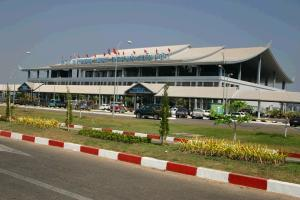

Le 27 janvier 2005,
 Nous nous reveillons tot et il nous reste une petite heure avant de repartir pour l’aeroport. Nous decidons alors de jeter un oeil aux temples qui se trouvent a proximite de la guest-house. Ils spnt aussi beaux qu’a Luang Prabang, c’est incroyable ! Et la ville a l’air tellement tranquille et calme. J’ai du mal a croire que je me trouve dnas une capitale ! Et toutes les inscriptions sur les panneaux des magasins ou des batiments administratifs sont en francais... Bienvenue chez nous ! Encore une fois, je suis peinee de quitter si vite cette ville qui, je pense, m’aurait beaucoup plu ! Il est temps de partir pour l’aeroport afin de quitter le Laos a present. Dur, dur... Arrives a l’aeroport, j’ai encore le droit a mon fauteuil roulant et a entrer en priorite dans l’avion. Encore une fois, Michael doit me porter jusqu’a mon siege dans l’avion. Mais comment font les gens qui sont tout seuls ?? Le vol est un peu sportif et comporte beaucoup de turbulences. Nous ne sommes pas vraiment rassures... Mais nous arrivons a bon port a Bangkok.
Rendez-vous en Thailande pour la suite de la journee !
Eve-Laure
La première fois que je suis allée au Laos avec mes enfants, tous les deux s’étaient endormis et impossible de les réveiller, le personnel de l’aéroport et de l’avion s’est chargé non seulement de porter mes enfants mais aussi tous mes bagages jusqu’à la sortie, après les formalités administratives (qui, il y a 12 ans étaient très lourdes !)
J’espère vraiment que vous pourrez un jour visiter plus amplement ce pays qui est magnifique.
{kind=link}